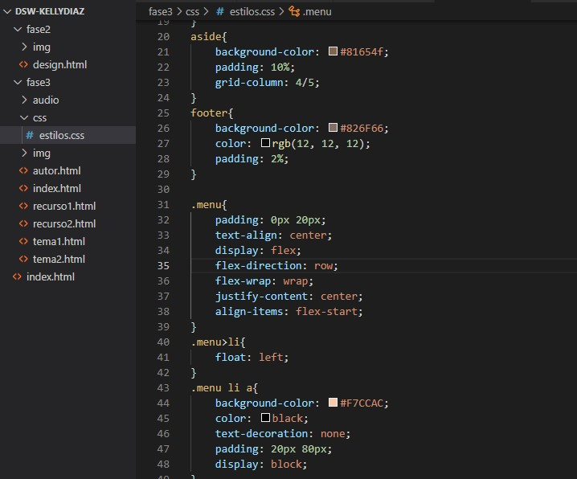

FRAMEWORKS CSS
Un framework es un archivo, en este caso CSSque dentro lleva classes variables y ID predefinidas para que no tengas que repetir lo mismo en muchos programas y para hacer que todo vaya mas rapido. Un framework CSS te puede hacer la vida más fácil con cosas como el sistema de Grid y muchas cosas más.
